<!-- .slide: data-state="front hide-controls" --> <div id="title">Symmetric Cryptography</div> <div id="subtitle">Data Privacy and Security</div> <div id="date">Data Science and Management (DASMA)</div> --- ## Communication Model <div class="content-center"> <div class="cell-center"> <p>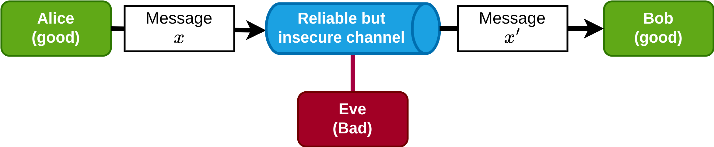</p> <br> </div> <div class="fragment" data-fragment-index="0"> <div class="cell-center"> We do not know whether the message $x$ is the same as the message $x'$. </div> <br/> </div> <div class="fragment" data-fragment-index="1"> <div class="cell-center"> <b>How can we build a <u>secure</u> communication channel between Alice and Bob?</b> </div> </div> </div> --- ## Secure Communication Channel using Symmetric Cipher <div class="content-center"> We use a **symmetric cipher** to: - encrypt ($E_k(x)$) using a key $k$ to obtain the ciphertext $y$ - decrypt ($D_k(y)$) using the same key $k$ the ciphertext $y$ to obtain the plaintext $x$ <div class="cell-center"> <p>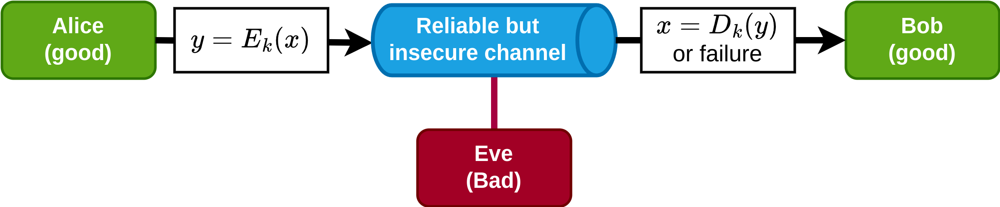</p> </div> <div class="fragment" data-fragment-index="0"> <div class="alert alert-note"><b>NOTE</b>: We are assuming that the key has been securely shared between Alice and the Bob!</div> <br/> </div> <div class="fragment" data-fragment-index="1"> <div class="cell-center"> **How can we implement $E_k$ and $D_k$?** </div> </div> </div> --- ## Example #1: Shift Cipher (Caesar's cipher) <div class="content-center"> <div class="alert alert-hint"><b>IDEA</b>: Shift letters in the alphabet by k position (if k=13 then is called ROT13)</div> <br/> $$ y_i = E_k(x_i) = (x_i + k)\\mod 26 $$ $$ x_i = D_k(y_i) = (y_i - k) \\mod 26 $$ <br/> <div class="fragment" data-fragment-index="0"> For instance, when $k=23$: - Plain: ABCDEFGHIJKLMNOPQRSTUVW<span style="color: red; font-weight: bold">XYZ</span> - Cipher: <span style="color: red; font-weight: bold">XYZ</span>ABCDEFGHIJKLMNOPQRSTUVW <br> - Plaintext: THE QUICK BROWN FOX JUMPS OVER THE LAZY DOG - Ciphertext: QEB NRFZH YOLTK CLU GRJMP LSBO QEB IXWV ALD </div> </div> --- ## Example #2: Substitution Cipher <div class="content-center"> <div class="alert alert-hint"><b>IDEA</b>: Map each letter to a different letter (k is the mapping, chosen randomly)</div> <br/> <br/> <div class="fragment" data-fragment-index="0"> For instance: - Plain: ABCDEFGHIJKLMNOPQRSTUVWXYZ - Cipher: ZEBRASCDFGHIJKLMNOPQTUVWXY <br/> <br/> - Plaintext: FLEE AT ONCE. WE ARE DISCOVERED - Ciphertext: SIAA ZQ LKBA. VA ZOA RFPBLUAOAR! </div> </div> --- ## Can we break these two ciphers? <div class="content-center"> <div class="fragment" data-fragment-index="0"> **YES**! Possible attacks: </div> <div class="fragment" data-fragment-index="1"> - Brute force (or exhaustive key search): - Shift cipher: try values of k in [0, 26] $\\Longrightarrow$ trivial to break by hand - Substitution cipher: try all 26! mapping = 288 $\\Longrightarrow$ it seems to be secure…. <br/> <br/> </div> <div class="fragment" data-fragment-index="2"> <div class="columns-container columns-center"> <div class="col"> - Letter Frequency Analysis: - we exploit that the statistical property of the text are not affected by the substitution (e.g., on average we expect the most frequent letter in the cipher text to be the letter e in the plain text). Generalize this idea by looking at pair (e.g., an) and triples (e.g., “the”) to break the entire algorithm. </div> <div class="col"> <div class="cell-center"> <p>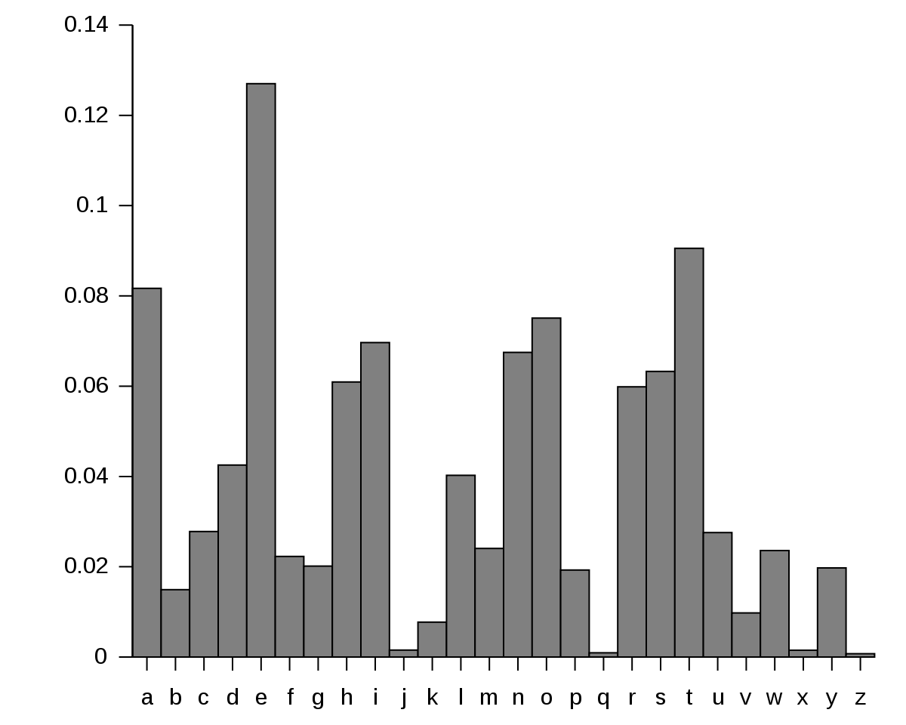</p> </div> </div> </div> </div> </div> --- ## But why can we break these two ciphers? <div class="content-center"> Two key lessons learned: <br/> <br/> <div class="fragment" data-fragment-index="0"> 1. Key space should be large to avoid brute force. <br/> <br/> </div> <div class="fragment" data-fragment-index="1"> 2. Ciphers should hide the statistical properties of the encrypted plaintext. The ciphertext symbols should appear to be random. </div> </div> --- ## Perfect cipher <div class="content-center"> A cipher over plaintext space $\\lbrace 0,1 \\rbrace^n$, key space $\\mathcal{K}$, and ciphertext space is **perfect** if for all plaintexts $x$ and ciphertexts $y$, when: <br/> <br/> $$ \\Pr[x|y] = \\Pr[x] $$ <br/> Hence, observing the ciphertext $y$ gives no information about the plaintext $x$, i.e., ***the ciphertext does not reveal any information on the plaintext***. </div> --- ## Proof (intuitive) <div class="content-center"> Starting from the definition of conditional probability: $$ Pr[x|y] = \\frac{Pr[x \\cap y]}{Pr[y]} $$ If $x$ and $y$ are independent, then: $$ Pr[x \\cap y] = Pr[x] Pr[y] $$ Hence: $$ Pr[x|y] = \\frac{Pr[x] Pr[y]}{Pr[y]} = Pr[x] $$ (assuming $Pr[y] \\neq 0$) </div> --- ## Background: Exclusive OR (XOR) <div class="content-center"> In computer science, a popular operation is the exclusive or (XOR) operation: <div class="cell-center" style="padding: 10px;"> | A | B | A XOR B | |---|---|:-------:| | 0 | 0 | 0 | | 0 | 1 | 1 | | 1 | 0 | 1 | | 1 | 1 | 0 | </div> <div class="alert alert-hint"><b>INTUITION</b>: only when the two inputs are different, the result is 1.</div> </div> --- ## One-Time-Pad (OTP) <div class="content-center"> - Plaintext space: $\\{0,1\\}^n$ - Key space: $\\{0,1\\}^n$ - Symmetric scheme, key chosen using a True Random Number Generator (TRNG) - Key is only used once (i.e., two messages must be encrypted with two different keys) <br/> <br/> $$ \\begin{aligned} \\text{E}_k(x) &= x \\oplus k\\\\{} \\text{D}_k(y) &= y \\oplus k = (x \\oplus k) \\oplus k = x \\oplus (k \\oplus k) = x \\oplus 0 = x \\end{aligned} $$ <br/> <div class="cell-center"> **OTP is a perfect cipher!** </div> <br/> <div class="fragment" data-fragment-index="0"> <div class="alert alert-error"><b>PROBLEM #1</b>: $|k| = |x|$, i.e., the key and the plaintext must have the same length!</div> </div> <div class="fragment" data-fragment-index="1"> <div class="alert alert-error"><b>PROBLEM #2</b>: We must change key for each message.</div> </div> </div> --- ## Why cannot we use the same keystream twice in OTP? <div class="content-center"> <p>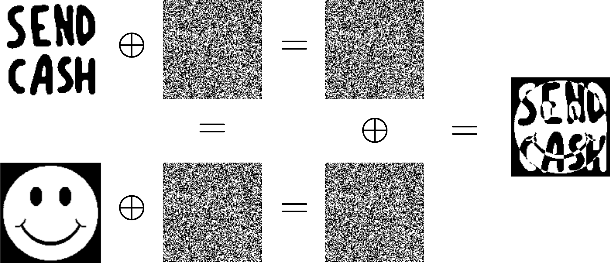</p> </div> --- ## Can we have a perfect cipher with |k| < |x|? <div class="content-center"> <div class="fragment" data-fragment-index="0"> <div class="alert alert-recall"><b>Shannon's Theorem</b>:<br> A cipher cannot be perfect if the size of its key space is less than the size of its message space.</div> <br/> <br/> </div> <div class="fragment" data-fragment-index="1"> Proof by contradiction: </div> <div class="fragment" data-fragment-index="2"> 1. We assume that the keyspace is smaller than the message space: $2^{|k|} < 2^{|x|}$. </div> <div class="fragment" data-fragment-index="3"> 2. We know that the ciphertext value $y_0$ occurs with non-zero probability: $\\Pr[y_0] > 0$. </div> <div class="fragment" data-fragment-index="4"> 3. We define the set of all decryptions of $y_0$ under all keys: $S = \\{ D_k(y_0) \\mid k \\in \\mathbb{K} \\}$. </div> <div class="fragment" data-fragment-index="5"> 4. From the size mismatch between keys and messages, it follows that there exists some message $x$ that is not in this decryption set: $\\exists k \\in \\mathbb{K} : x \\not\\in S$. </div> <div class="fragment" data-fragment-index="6"> 5. However, if for every key $k \\in \\mathbb{K}$ we have that the encryption of $x$ never produces $y_0$, i.e. $\\forall\\,k \\in \\mathbb{K}: E_k(x)\\neq y_0$, then the probability of observing $y_0$ must be zero: $\\Pr[y_0] = 0$ </div> <div class="fragment" data-fragment-index="7"> 6. This contradicts our earlier assumption. </div> </div> --- ## Symmetric Ciphers <div class="content-center"> Two main approaches: <br/> <br/> <div class="fragment" data-fragment-index="0"> 1. **Stream** ciphers: - inspired by OTP - given a secret key, generate a byte of stream called *keystream* that has the same length as the message - encrypt/decrypt bits from x individually using a XOR operation with the keystream (as in OTP) <br/> <br/> </div> <div class="fragment" data-fragment-index="1"> 2. **Block** ciphers: - split the message x in blocks of fixed size - encrypt/decrypt each block - different *operation mode*: process blocks independently, chain blocks, etc. </div> </div> --- <!-- .slide: data-state="break-blue hide-controls" --> # Stream Ciphers --- ## Stream Ciphers <div class="content-center"> Given: - plaintext $x$ ($x_i$ is the i-th bit from $x$) - keystream $s$ (where $|x|==|s|$ and $s_i$ is the i-th bit from $s$) Then: - Encryption: $$ y_i = E_{s_i}=x_i \\oplus s_i = x_i + s_i\\bmod\\,2 $$ - Decryption: $$ x_i = D_{s_i}=y_i \\oplus s_i = y_i + s_i\\bmod\\,2 $$ <br/> The cipher must provide the keystream generator. <br/> <div class="fragment" data-fragment-index="0"> <div class="alert alert-note"><b>NOTE</b>: Modulo 2 is equivalent to a bitwise XOR operation.</div> </div> </div> --- ## Synchronous vs Asynchronous Stream Ciphers <div class="content-center"> A stream cipher is called: - **synchronous** when $s_i$ is a function of the key - Real-world examples: RC4, ChaCha20, Salsa20, SNOW 3G <br/> <br/> - **asynchronous** when $s_i$ is a function of the key and previous bits of $y$ - Real-world examples: CFB-mode stream constructions </div> --- <!-- .slide: data-state="break-blue hide-controls" --> ## RC-4: Rivest Cipher 4 --- ## RC-4: Ron's Code (or Rivest Cipher 4) <div class="content-center"> - Designed in 1987 by Ron Rivest, trade secret until 1994 when its description was leaked - Synchronous, variable key length, very fast to compute - Starting from the key it will apparently generate a random stream, eventually it will repeat the sequence. However, the period is very long (> $10^{100}$). - Several attacks along the years: - From 2015, there is speculation that some state cryptologic agencies may possess the capability to break RC4 when used in the TLS protocol. - IETF has published RFC 7465 to prohibit the use of RC4 in TLS. - Mozilla and Microsoft have issued similar recommendations. </div> --- ## RC-4: Key Scheduling Algorithm (KSA) <div class="content-center"> ```python j = 0 S = list(range(256)) for i in range(256): j = (j + S[i] + key[i % len(key)]) % 256 S[i], S[j] = S[j], S[i] ``` <br/> <br/> At the end S is a permutation of {0, …, 255} generated based on the value of the key. </div> --- ## RC-4: Pseudo-Random Generation Algorithm (PRGA) <div class="content-center"> ```python i = 0 j = 0 ciphertext = [] for n in range(len(plaintext)): i = (i + 1) % 256 # Increment i by 1 j = (j + S[i]) % 256 # Increment j based on S[i] # Swap S[i] and S[j] temp = S[i] S[i] = S[j] S[j] = temp # Generate keystream byte K = S[(S[i] + S[j]) % 256] # Encrypt ciphertext.append(K ^ plaintext[n]) ``` </div> --- <div class="content-center"> Visually: <p>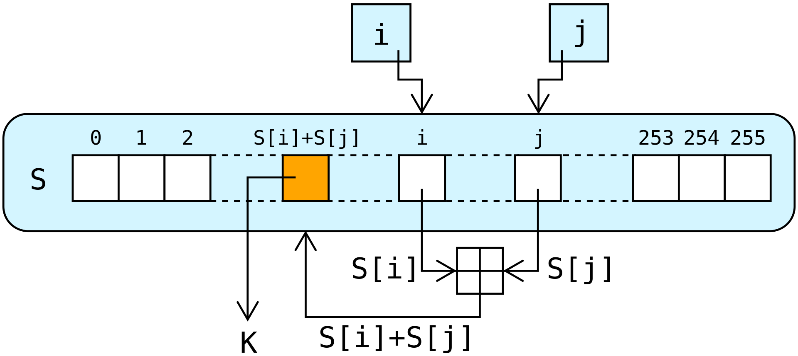</p> </div> --- ## RC-4: how to encrypt different messages? <div class="content-center"> <div class="fragment" data-fragment-index="0"> <div class="alert alert-error"><b>PROBLEM:</b> We cannot use the same key for two messages, otherwise the keystream could be recovered as in OTP. Hence, we need a way of <i>randomizing</i> each keystream.</div> </div> <div class="fragment" data-fragment-index="1"> <div class="alert alert-hint"><b>IDEA</b>: Combine the key with an <b>initialization vector (IV)</b> that acts as a randomizer.</div> </div> <div class="fragment" data-fragment-index="2"> <div class="alert alert-warning"><b>WARNING:</b> Some algorithms are weak to attacks due to an unsecure combination of IV and the key.</div> <br/> </div> <div class="fragment" data-fragment-index="3"> **WEP** (Wired Equivalent Privacy): - used for WiFi in the past - IV is 24 bits, key is 40 bits - problem: - there is a 50% probability the same IV will repeat after 5,000 packets. - ...and the attacker is often able to *generate* traffic in a network. </div> </div> --- <!-- .slide: data-state="break-blue hide-controls" --> # Block Ciphers --- ## Block Ciphers <div class="content-center"> Given: - a block $x_i$ of the message $x$ of $h$ bits ($h$ is <u>fixed</u> by the block cipher) - a key $k$ of $n$ bits ($n$ <u>fixed</u> by the block cipher) - $n$ can be different from $h$ Then: <div class="cell-center"> <img src="img/block-cipher.drawio.png" style="width: 620px;" /> </div> <br/> <br/> Real-world ciphers: DES/2-DES/3-DES, IDEA, RC-2, RC-5, Blowfish, **AES** </div> --- ## What if the message is larger than the block size? <div class="content-center"> Strategy: 1. Divide the message into blocks of size $h$ 2. Exploit an ***operation mode*** to compose while encrypting the blocks. <br> There are several operation modes: - Electronic Code Block (ECB) - Cipher Block Chaining (CBC) - Propagating Cipher Block Chaining (PCBC) - Output Feedback Mode (OFB) - Cipher Feedback Mode (CFB) - Counter Mode (CTR) </div> --- ## Electronic Code Block (ECB) <div class="content-center"> <div class="alert alert-hint"><b>IDEA</b>: Encrypt each plaintext block independently, then append the ciphertext blocks.</div> <br/> <div class="fragment" data-fragment-index="0"> <div class="columns-container columns-center"> <div class="col"> <div class="cell-center"> Encryption:<br> <img src="img/ecb-enc.jpg" style="height: 350px;" /> </div> </div> <div class="col"> <div class="cell-center"> Decryption:<br> <img src="img/ecb-dec.jpg" style="height: 350px;" /> </div> </div> </div> <div class="cell-center"> Simple and efficient (easy to parallelize) </div> </div> </div> --- ## Electronic Code Block (ECB): plaintext patterns <div class="content-center"> <div class="columns-container columns-top"> <div class="col"> <div class="cell-center"> <br> Plaintext </div> </div> <div class="col"> <div class="fragment" data-fragment-index="0"> <div class="cell-center"> <p>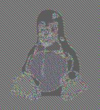</p><br> Ciphertext </div> </div> </div> <div class="col"> <div class="fragment" data-fragment-index="1"> <div class="cell-center"> <br> What we would like! </div> </div> <br> </div> </div> <div class="fragment" data-fragment-index="2"> <div class="alert alert-error"><b>PROBLEM:</b> Does not conceal plaintext patterns!</div> </div> </div> --- ## Electronic Code Block (ECB): Attacks <div class="content-center"> - **Blocks reordering**: if the message is "Bob transfers `$`10 to Oscar", it could be manipulated to "Oscar transfers `$`10 to Bob". <br> - **Blocks can replaced, removed, appended**: if the message is "Transfer `$`10 to Oscar", it could be manipulated to "Transfer `$`10000 to Oscar". <br> - **Encrypting the same message twice will generate the same ciphertext**: anyone can detect that are sending the same message twice, which could be a privacy issue. </div> --- ## Cipher Block Chaining (CBC) <div class="content-center"> <div style="padding-bottom: 10px;"> <div class="alert alert-hint"><b>IDEA</b>: Each plaintext block is XORed with the previous ciphertext block.</div> </div> <div class="fragment" data-fragment-index="0"> <div class="columns-container columns-center"> <div class="col"> <div class="cell-center"> Encryption:<br> <img src="img/cbc-enc.jpg" style="height: 300px;" /> </div> </div> <div class="col"> <div class="cell-center"> Decryption:<br> <p>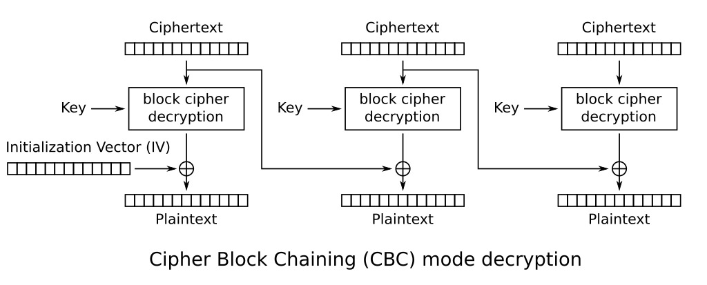</p> </div> </div> </div> Notice that: - Block $y_i$ depends on $y_{i-1}$ - An IV is used at the start to randomize the process - Parallelization: no for encryption, yes for decryption </div> </div> --- ## Cipher Block Chaining (CBC): Some Details <div class="content-center"> - Impact of bit flips: - If one bit flipped in $x_i$ then all subsequent blocks are affected! - If one bit is flipped in $y_{i-1}$ then $x_i$ is affected an unpredictable manner, while $x_i$ in a predictable manner. This could be exploited by an attacker. Hence we need to use integrity checks (e.g. CRC) to detect such attacks. <br> - Initialization Vector: - Must change for each message, otherwise an attacker can see when we are encrypting again the same message. - Can be made public, it is not a secret. <br> - CBC can be seen as an asynchronous stream cipher. As for ECB, we use padding to make the length of the message a multiple of the block size. </div> --- ## Propagating Cipher Block Chaining (PCBC) <div class="content-center"> <div class="alert alert-hint"><b>IDEA</b>: Propagate any (flipper or errored) bit both during encryption and decryption.</div> <br/> <div class="fragment" data-fragment-index="0"> <div class="columns-container columns-center"> <div class="col"> <div class="cell-center"> Encryption:<br> <p>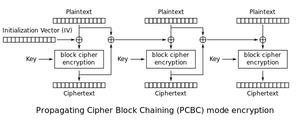</p> </div> </div> <div class="col"> <div class="cell-center"> Decryption:<br> <p>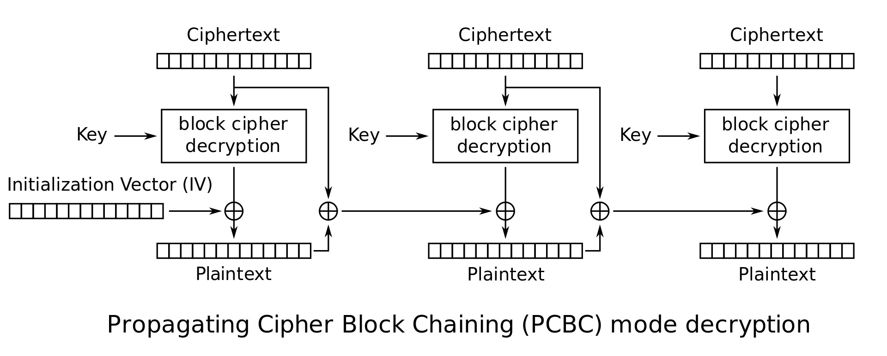</p> </div> <br> </div> </div> <div style="padding-top: 10px;"> - Small changes affect all following blocks in both encryption and decryption - Swapping two adjacent ciphertext blocks does not affect later blocks </div> </div> </div> --- ## Cipher FeedBack (CFB) <div class="content-center"> <div style="padding: 10px;"> <div class="alert alert-hint"><b>IDEA</b>: Encrypt the previous ciphertext (or IV) to get a keystream, XOR it with the current plaintext to get the ciphertext, then feed this ciphertext back as input for the next keystream.</div> </div> <div class="fragment" data-fragment-index="0"> <div class="columns-container columns-top"> <div class="col"> <div class="cell-center"> <p>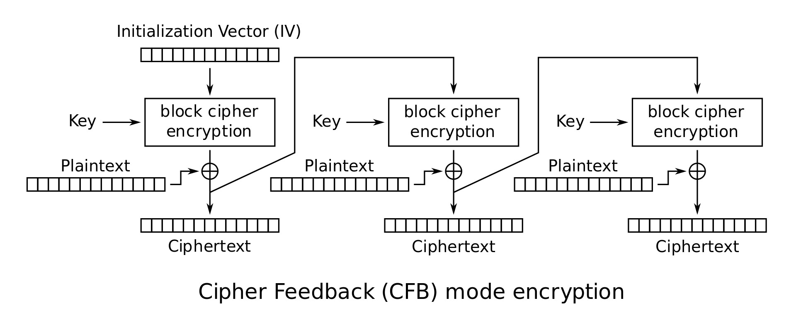</p> <br> - asynchronous stream cipher - error propagation in encryption - encryption is not parallelizable - same encryption algorithm is used in both encryption and decryption </div> </div> <div class="col"> <div class="cell-center"> <p>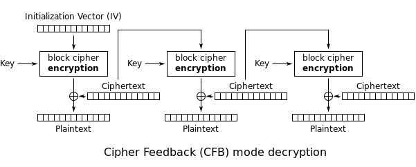</p> <br> - decryption can be parallelized - one bit error in ciphertext blocks, affect two plaintext blocks, other blocks are fine - no need of padding </div> </div> </div> </div> </div> --- ## Output FeedBack (OFB) <div class="content-center"> <div class="alert alert-hint"><b>IDEA</b>: Turn the block cipher into a synchronous stream cipher by repeatedly encrypting an IV to generate a keystream that is XORed with plaintext.</div> <div class="fragment" data-fragment-index="0"> <div class="columns-container columns-top"> <div class="col"> <div class="cell-center"> <p>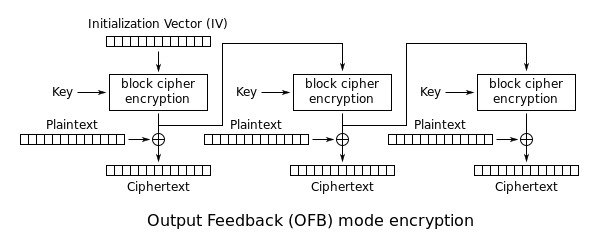</p> <br> - synchronous stream cipher - one bit flip in ciphertext affect only one bit in the output (this helps using error correction codes) - encryption and decryption are not parallelizable - IV must be different for each message </div> </div> <div class="col"> <div class="cell-center"> <p>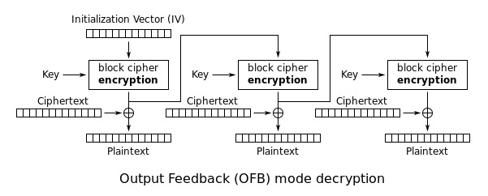</p> <br> - same encryption algorithm is used both in encryption and decryption - if encryption function and the key are known the adversary, then IV must be kept secret - if the key is not known by the attacker, then IV can be sent in clear </div> </div> </div> </div> </div> --- ## Counter Mode (CTR) <div class="content-center"> <div class="alert alert-hint"><b>IDEA</b>: Encrypt a nonce+counter and XOR with the plaintext to get a stream cipher.</div> <br/> <div class="fragment" data-fragment-index="0"> <div class="columns-container columns-top"> <div class="col"> <div class="cell-center"> <img src="img/ctr-enc.jpg" style="height: 300px;" /> <br> - Asynchronous stream cipher - Besides IV (nonce), it uses - A counter that is incremented for each block </div> </div> <div class="col"> <div class="cell-center"> <p>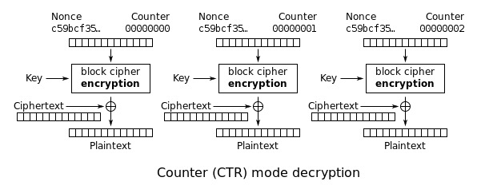</p> <br> - Encryption is parallelizable - Decryption is parallelizable - Same encryption algorithm is used in encryption and decryption </div> </div> </div> </div> </div> --- ## Operation modes: summary <div class="content-center"> <div class="cell-center"> <p>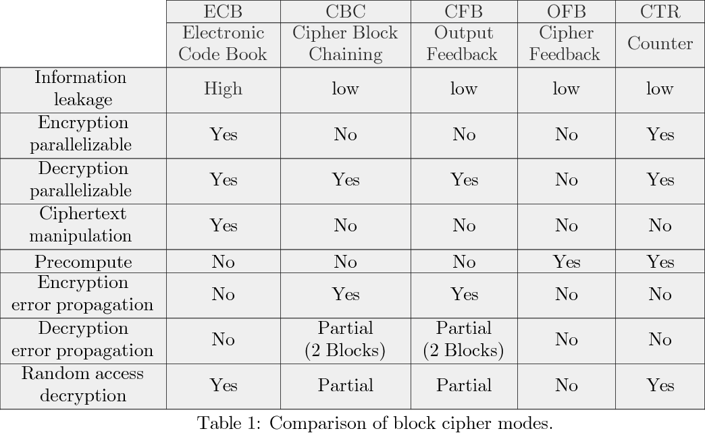</p> </div> </div> --- <!-- .slide: data-state="break-blue hide-controls" --> # Advanced Encryption Standard (AES) --- ## Advanced Encryption Standard (AES) <div class="content-center"> - AES is the most widely used symmetric cipher today <br> - The algorithm for AES was chosen by the US National Institute of Standards and Technology (NIST) in a multi-year selection process. <br> - The requirements for all AES candidate submissions were: - Block cipher with 128-bit block size - Three supported key lengths: 128, 192 and 256 bit - Security relative to other submitted algorithms - Efficiency in software and hardware </div> --- ## Chronology of the AES Selection <div class="content-center"> - Open call for a new block cipher announced by NIST in January, 1997 - 15 candidates algorithms accepted in August, 1998 - 5 finalists announced in August, 1999: - *Mars* – IBM Corporation - *RC6* – RSA Laboratories - *Rijndael* – J. Daemen & V. Rijmen - *Serpent* – Eli Biham et al. - *Twofish* – B. Schneier et al. - In October 2000, Rijndael was chosen as the AES - AES was formally approved as a US federal standard in November 2001. NSA allows to use AES with 192/256 bit key. </div> --- ## AES: Overview <div class="content-center"> <div class="cell-center"> <p>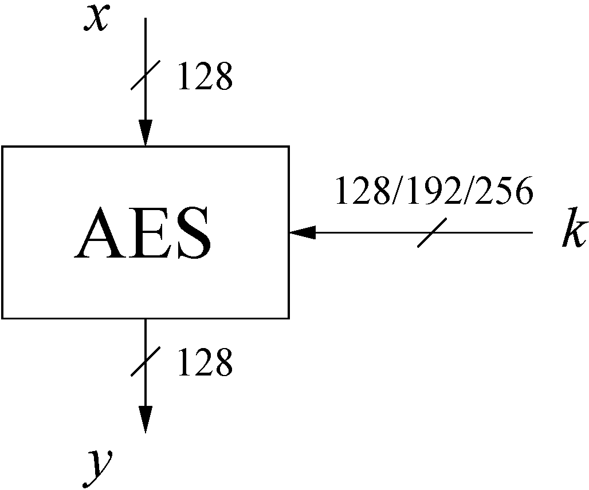</p> </div> <br/> <br/> The number of rounds depends on the chosen key length: | Key length (bits) | Number of rounds | |:-----------------:|:----------------:| | 128 | 10 | | 192 | 12 | | 256 | 14 | </div> --- <div class="content-center"> Each round consists of different “layers”: <div class="cell-center"> <p>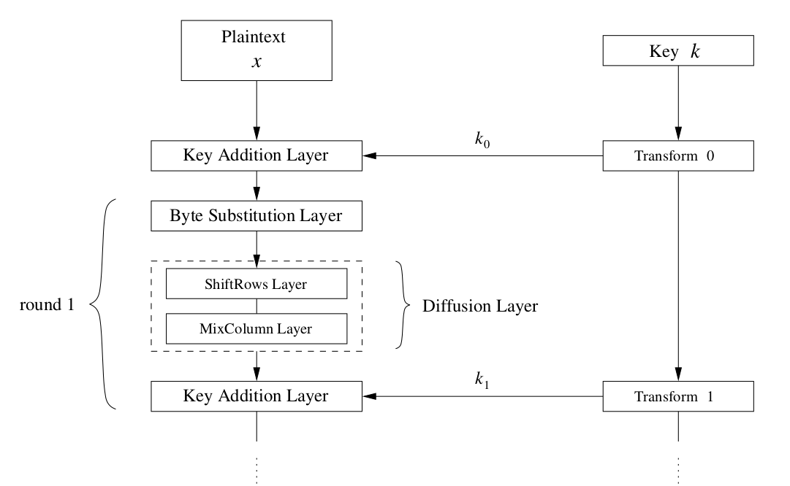</p> </div> </div> --- <div class="content-center"> <p>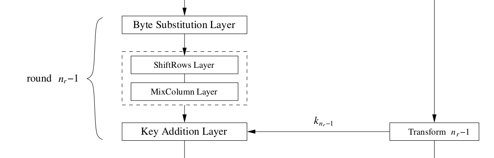</p> </div> --- <div class="content-center"> <p>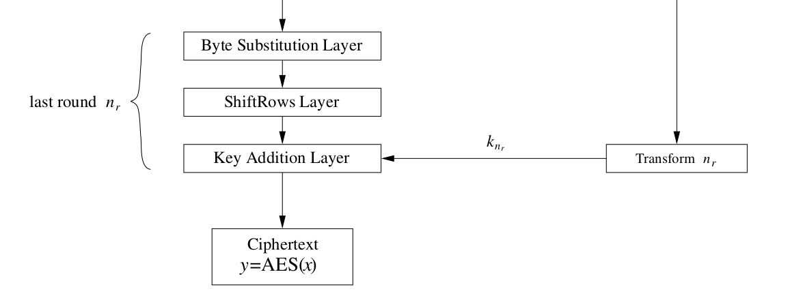</p> </div> --- ## AES: Layers <div class="content-center"> Each round consists of four main layers: 1. **Byte Substitution** (goal: confusion) 2. **Shift Row** (goal: diffusion) 3. **Mix Column** (goal: diffusion) 4. **Key Addition** (goal: whitening) Last round does not have MixColumn layer. </div> <div class="footnotes"> <sup>*</sup> This [**page**](https://legacy.cryptool.org/en/cto/aes-animation) has a nice animation showing the layers in action. </div> --- <div class="content-center"> Where: - **Confusion**: make the relationship between the key and the ciphertext as complex and unpredictable as possible, so that changing the key or a plaintext bit causes non-obvious, seemingly random changes in the ciphertext (typically achieved with non-linear operations like S-boxes). <br> - **Diffusion**: spread the influence of each plaintext and key bit across many ciphertext bits, so that a small change in the input (e.g., flipping a single bit) results in large, seemingly random changes throughout the output; this is usually achieved with linear mixing operations that thoroughly blend bits across positions. <br> - **Whitening**: the process of XORing the plaintext (before the first round) and/or the intermediate state (after the last round) with one or more subkeys derived from the main key, so that the data entering and leaving the core round function is already “mixed” with secret material. This makes many classical attacks harder because an attacker never sees the raw input or output of the round function, and simple structures (like linear relations) are obscured by these extra key-dependent layers. </div> --- <div class="content-center"> <p>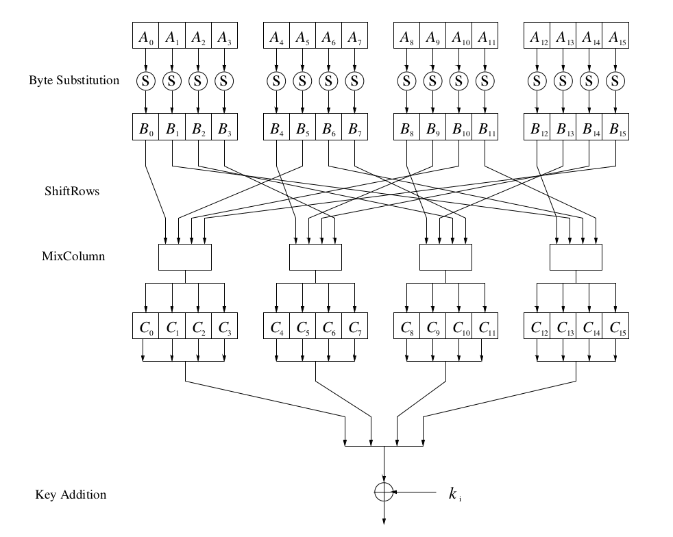</p> </div> --- ## Internal Structure of AES <div class="content-center"> AES is a byte-oriented cipher based on a substitution-permutation network (SPN). The state A (i.e., the 128-bit data path) can be arranged in a 4x4 matrix: <table> <tr> <td>A0</td><td>A4</td><td>A8</td><td>A12</td> </tr> <tr> <td>A1</td><td>A5</td><td>A9</td><td>A13</td> </tr> <tr> <td>A2</td><td>A6</td><td>A10</td><td>A14</td> </tr> <tr> <td>A3</td><td>A7</td><td>A11</td><td>A15</td> </tr> </table> with A0, …, A15 denoting the 16-byte input of AES </div> --- ## Confusion Layer <div class="content-center"> <div class="cell-center"> <p>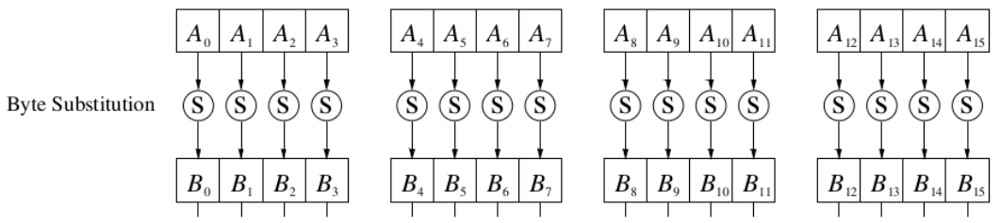</p> </div> The Byte Substitution layer consists of 16 S-Boxes with the following properties: - The S-Boxes are ***identical*** - The only ***nonlinear*** elements of AES, i.e., $ByteSub(A_i) + ByteSub(A_j) \\neq ByteSub(A_i + A_j)$ - ***Bijective***, i.e., there exists a one-to-one mapping of input and output bytes <br> ⇒ S-Box can be uniquely reversed - ***Confusion***: if you flip one bit in $A_i$, it will affect on average 3 or 4 bits in $B_i$ In software implementations, the S-Box is usually realized as a lookup table. </div> --- <div class="content-center"> <p>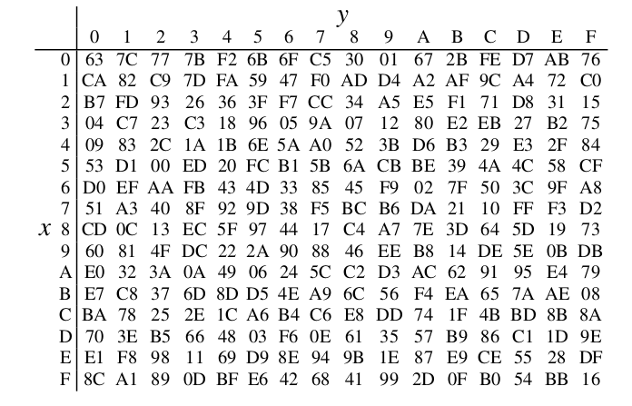</p> <br/> <br/> <div class="columns-container columns-top"> <div class="col"> $$ S(A_i)=B_i $$ </div> <div class="col"> <div class="cell-center"> for instance: </div> </div> <div class="col"> $$ S(\\mathtt{0xC2})=\\mathtt{0x25} $$ </div> </div> </div> --- ## Diffusion Layers <div class="content-center"> <p>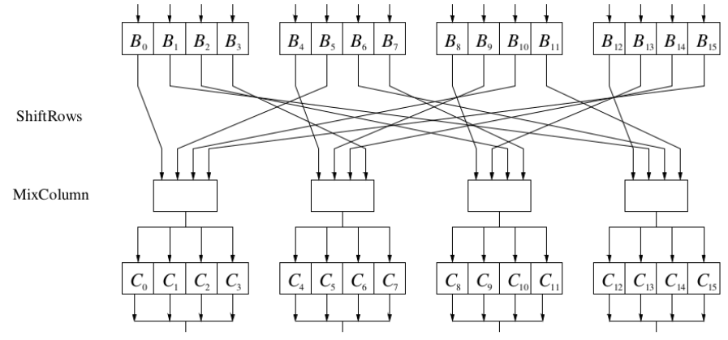</p> - ***Diffusion***: given a byte with some bit flips, it will spread the effect on 32 bits from the state. - consists of two sublayers: - ***ShiftRows*** Sublayer: Permutation of the data on a byte level - ***MixColumn*** Sublayer: Matrix operation which combines (“mixes”) blocks of four bytes - performs a linear operation on state matrices A, B, i.e., DIFF(A) + DIFF(B) = DIFF(A + B) </div> --- ## Key Addition Layer <div class="content-center"> Inputs: - 16-byte state matrix $C$ - 16-byte subkey $k_i$ Output: $C \\oplus k_i $ <br> The different subkeys $k_i$ are generated by the ***key schedule***, which we omit here for the sake of simplicity. </div> --- ## AES: Decryption <div class="content-center"> The decryption process is similar to the encryption process, but in reverse order: 1. AddRoundKey 2. InvShiftRows 3. InvSubBytes 4. InvMixColumns All these steps are trivial given the key. </div> --- <!-- .slide: data-state="break-blue hide-controls" --> # Using AES in the real world ...or at least in the Python world! --- ## AES in Python: package and setup <div class="content-center"> <div style="padding-bottom: 10px;"> Install the cryptography package: ```bash pip install cryptography ``` </div> <br/> Preliminary imports and setup: ```python from os import urandom from cryptography.hazmat.primitives.ciphers import Cipher, algorithms, modes from cryptography.hazmat.primitives import padding from cryptography.hazmat.backends import default_backend backend = default_backend() key = urandom(32) # AES-256 block_size = 128 # bits (AES block size) # message to encrypt (bytes) plaintext = b'this is a message to encrypt' ``` </div> --- ## AES-ECB (demo only) <div class="content-center"> ECB is deterministic on equal blocks and leaks patterns, hence **avoid** it in real systems! ```python # Padding padder = padding.PKCS7(block_size).padder() padded = padder.update(plaintext) + padder.finalize() # Encrypt cipher = Cipher(algorithms.AES(key), modes.ECB(), backend=backend) encryptor = cipher.encryptor() ciphertext = encryptor.update(padded) + encryptor.finalize() # Decrypt decryptor = cipher.decryptor() padded2 = decryptor.update(ciphertext) + decryptor.finalize() # Unpadding unpadder = padding.PKCS7(block_size).unpadder() plaintext2 = unpadder.update(padded2) + unpadder.finalize() assert plaintext2 == plaintext # This should be true! ``` </div> --- ## AES-CBC <div class="content-center"> CBC requires a fresh random IV per message and padding. ```python iv = urandom(16) # 128-bit IV # Padding padder = padding.PKCS7(block_size).padder() padded = padder.update(plaintext) + padder.finalize() # Encrypt cipher = Cipher(algorithms.AES(key), modes.CBC(iv), backend=backend) encryptor = cipher.encryptor() ciphertext = encryptor.update(padded) + encryptor.finalize() # Decrypt (needs the same iv) decryptor = cipher.decryptor() padded2 = decryptor.update(ciphertext) + decryptor.finalize() # Unpadding unpadder = padding.PKCS7(block_size).unpadder() plaintext2 = unpadder.update(padded2) + unpadder.finalize() assert plaintext2 == plaintext # This should be true! ``` </div> --- ## AES-CTR <div class="content-center"> CTR is a stream-like mode: no padding, but the nonce must never repeat for the same key. ```python nonce = urandom(16) # This is the initial counter block (16 bytes) # Encrypt cipher = Cipher(algorithms.AES(key), modes.CTR(nonce), backend=backend) encryptor = cipher.encryptor() ciphertext = encryptor.update(plaintext) + encryptor.finalize() # Decrypt decryptor = cipher.decryptor() plaintext2 = decryptor.update(ciphertext) + decryptor.finalize() assert plaintext2 == plaintext # This should be true! ``` </div> --- ## AES-CFB <div class="content-center"> CFB is stream-like: no padding. It uses an IV (never reuse IV with same key). ```python iv = urandom(16) # Encrypt cipher = Cipher(algorithms.AES(key), modes.CFB(iv), backend=backend) encryptor = cipher.encryptor() ciphertext = encryptor.update(plaintext) + encryptor.finalize() # Decrypt decryptor = cipher.decryptor() plaintext2 = decryptor.update(ciphertext) + decryptor.finalize() assert plaintext2 == plaintext # This should be true! ``` </div> --- ## AES-OFB <div class="content-center"> OFB is stream-like: no padding. It uses an IV (never reuse IV with same key). ```python iv = urandom(16) # Encrypt cipher = Cipher(algorithms.AES(key), modes.OFB(iv), backend=backend) encryptor = cipher.encryptor() ciphertext = encryptor.update(plaintext) + encryptor.finalize() # Decrypt decryptor = cipher.decryptor() plaintext2 = decryptor.update(ciphertext) + decryptor.finalize() assert plaintext2 == plaintext # This should be true! ``` </div>